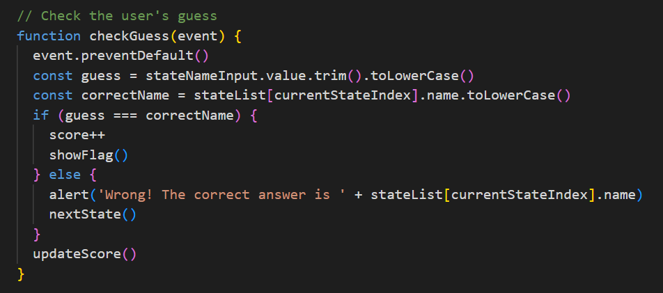

Personal Project
11/07/24
REFLECTION
I've just finished working on a small personal project. I have got it to a nice stage of MVP (Minimum Viable Product) .I created a small state guessing game. I have always liked geography and I love a good quiz so I thought a guessing style game with the 50 states of America as the topic would be a fun idea to work on. Using outlines of the states you have to guess which one it is. If guessed correctly the state flag will pop up and you will move on to the next one. Once you get all fifty you get secret reward.
What the process was like?
It was different! It made me feel all times of ways about my skills and my person, It was challenging in parts but really rewarding to see it up and running. I struggled for a bit with things but I was surprised at how much I could go back and look at my previous work and see the answers in those files. Working on a project from scratch felt quite daunting to begin with. Actually beginning to code was a bit of hurdle, But once the basic framework of my HTML, CSS and JS was down I felt like I could get into a flow. Working towards making my idea on paper become a real usable page.
What went well?
Once I got over the hurdle of starting I found putting the HTML frame for my site and adding in some style with CSS to be a very quick task. I was surprised at myself for being able to construct the code so quickly. Previous code I had done held the answers to a lot of my questions and helped to give me some guidance when coding my JavaScript.
Looking at the Tic-tac-toe work and JS carnival work I was able to understand how to create a guessing function to check the users answer. Referring to my statelist array I could declare variables for the suer's guess and the correct answer. Using an If Else statement I was then able to check the answer and either give the flag of the state or a pop up telling them the right state. Here's a look at the code of the function I created for this:
What did I find difficult?
I had some pretty complicated (for me maybe not others) JS functions. I used different methods of problem solving to tackle this, google bit of rubber ducky and asking a friend. Sometimes I was able to get the help and fix the problem but sometimes I just made the problem worse, sending myself down a dark spiral of 'what the fuck am I doing??' but after lots of trial and error, problem solving and google deep dives I was able to get it (mostly) to a working state product.
What would I do differently next time?
Maybe next time I wont make a game, Still something interactive but maybe on a different scale. A car window wiper sim maybe? All in all I think I would give myself a bit more time to ideate, plan before beginning my code. Very happy with what I was able to achieve!
Now try it for yourself and enjoy!
Sam.